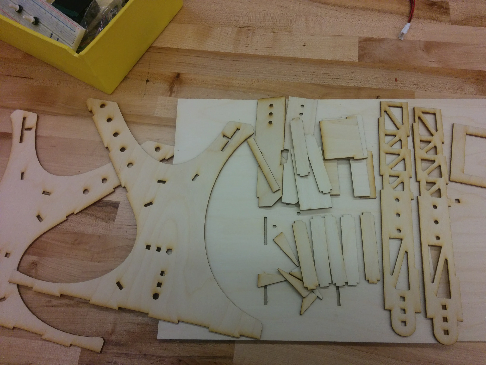

Prototype
This prototype is the first model of Frost, and was the main experiment subject throughout most of our sprints. We made this prototype as a proof of concept for project validation, and continued to improve upon it with computer vision, sensor fusion, and decision making algorithms, until we were ready to integrate with the final version of the robot.
First Pass Prototype
Mechanical
We created a smaller version of our full-size catapult out of ⅛” plywood and interface with VEX Robotics parts so that we could test our vision tracking system early on and evaluate what changes we would need to make to our mechanical system. We chose to make our initial prototype out of wood so that we could lasercut all the pieces and assemble them within two days. We learned that if we wanted to build a more powerful catapult, we would need a latch mechanism that would reduce load on our servos, a more reliable method of pulling down the catapult arm, and a stronger material for the design.
Electrical
The electrical system for the prototype was very simple. An arduino motor shield controlled the three motors on the catapult. Two for the arm, and one for panning. Two potentiometers determined the angle for the arm and the lazy susan, in which the angle data was fed into the arduino. Finally a servo was also controlled by the arduino motor shield.
Software/Firmware
The main code involved with this prototype was the firmware used on the Arduino. The firmware is similar to what we currently use for our final product. The launcher is completely manually controlled via user input into the Arduino serial channel. Inputs consist of an angle for the pan motor and a distance for the arm motor. The pan motor uses PID control and references its encoder to move towards the inputted angle. The arm motors use Bang-Bang control and reference their encoder to move towards the inputted distance. The angles and distances were determined experimentally. The launcher only fires based on user input. The main loop of the code mainly listens for user input for the angle and distance. Once a command to fire is given, there is a specific sequence that ensures that the launcher arms, fires, and re-arms in that order. When the launcher finishes firing, it essentially resets to the home position entirely, with the arm completely slack and the angle at 0. When an input is given, it will perform whatever actions it was told, and then afterwards reset. The firmware thus makes it such that the robot only moves when the user tells it to move.